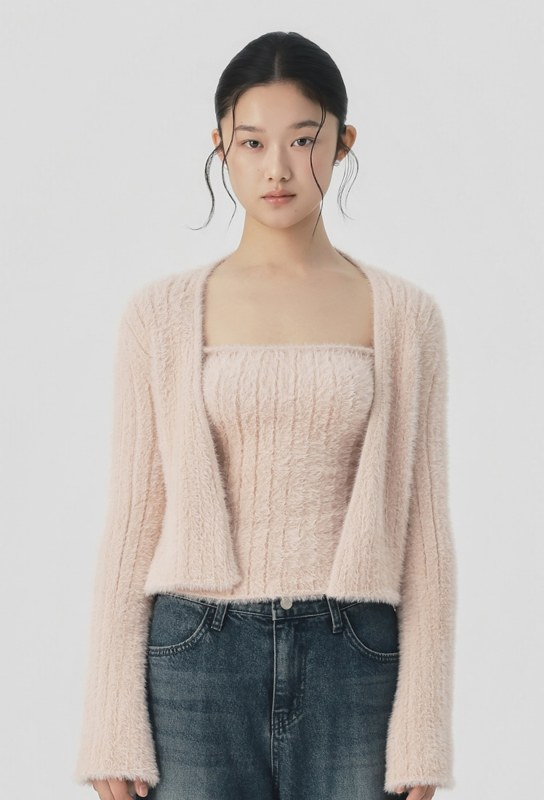

OBSERVATION / 발견
원본에는 혼용률과 실측이 없었던 게 아니라 상세 이미지 하단에 있었습니다. 본문 상단의 ‘앙고라 텍스처’만 먼저 읽으면 원료 구성과 혼동할 수 있고, 세탁 설명 본문에는 ‘온수 사용을 픽해주시고’와 ‘미온수나 찬물 세탁’이 함께 적혀 있습니다.
새로운 수치를 만든 시안이 아닙니다. 기존 상품 상세 이미지 아래쪽에 있던 소재·실측 정보를 구매 판단 지점으로 옮기고, 오해하기 쉬운 표현을 분리한 제안입니다.

포근한 앙고라풍 텍스처의 크롭 니트 슬리브리스. 앙고라 원료가 포함됐다는 뜻은 아니며, 공식 상세 이미지의 소재 표기는 나일론 100%입니다.
| 가슴 | 허리 | 밑단 | 앞총장 | 뒤총장 |
|---|---|---|---|---|
| 30 | 28 | 32 | 34.5 | 31.5 |
원본에는 혼용률과 실측이 없었던 게 아니라 상세 이미지 하단에 있었습니다. 본문 상단의 ‘앙고라 텍스처’만 먼저 읽으면 원료 구성과 혼동할 수 있고, 세탁 설명 본문에는 ‘온수 사용을 픽해주시고’와 ‘미온수나 찬물 세탁’이 함께 적혀 있습니다.